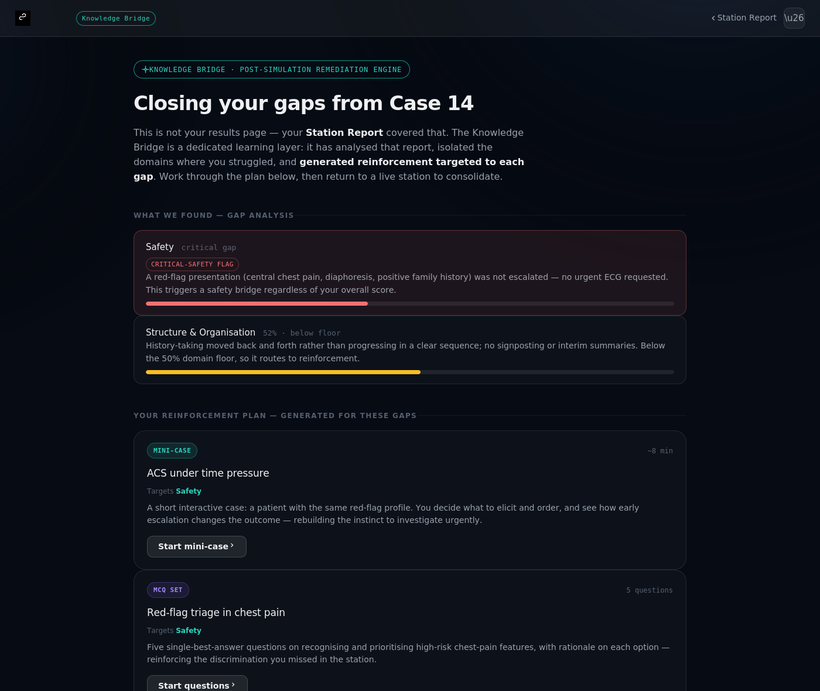

Plexus Master Station Blueprint — v2 (authoring template)#
Status: Canonical authoring spec for the Plexus OSCE engine (introduced in design V3).
Derived from: two client-authored station templates — PMR-002 (Intrathecal Baclofen Pump — counseling & informed consent) and PLX-PMR-AS-001 (Ankylosing Spondylitis — breaking bad news & joint-protection counselling) — plus the client's executive summary of the Plexus OSCE ecosystem.
Purpose: give clinical authors, content reviewers, and the AI engineering team one fixed shape for every station, so that the prototype screens, the implementation plan, and the running engine all agree.
This document defines how a station is structured. It does not define the brand, the screens, or the build stack — those live in the design system, the screen library, and
IMPLEMENTATION_PLAN.md. Where the engine has to enforce something, the relevant rule is tagged [ENGINE].
0. The core idea: one master station, many variants#
A Plexus station is not a fixed script. It is a locked body of clinical fact plus a locked rubric, wrapped in layers the AI is allowed to vary. The same station can be run as an easy explicit task for a student or a concealed, confrontational task for a senior — without changing a single clinical fact or rubric item. Difficulty is a presentation layer, never a content layer.
Five things the engine may vary per run; two things it may never touch:
| May vary per run (presentation) | Never varies (content) |
|---|---|
| How much of the task is revealed to the candidate (tier / concealment) | The clinical facts (Section 3) |
| The simulated patient's affect and resistance | The rubric items and their critical-fail status (Section 8) |
| How explicit the patient's cues are | — |
| Which 2–3 patient questions are drawn (Section 6) | — |
| Operating mode (Exam vs Tutor) | — |
1. Scoring model — per-station domains (V3 decision)#
This is the decision that shapes the score-reveal screen, the analytics, and the remediation router.
- Each station declares its own domain set. There is no fixed universal taxonomy across stations. The Station Report score wheel (see §12) renders whatever domains the active station defines.
- A station's rubric is a list of items, each scored, each weighted (or scored 0/1/2), and each assigned to exactly one of that station's domains.
- Raw marks normalise to a 0–100 percentage for display and threshold logic. A station whose senior tier totals 42 marks and whose lower tier totals 40 marks both report on the same 0–100 wheel — the percentage is the comparable number, the raw marks are the authoring substrate. (This is why V3 keeps percentage reporting from design V2; the two client docs validate it rather than contradict it.)
- Pass threshold defaults to 65%, configurable per station / per programme (range 60–70% in practice). The AS template's 27/42 ≈ 64.3% pass is an instance of this.
- Critical-fail items override the percentage. Any item tagged
[CRITICAL-FAIL]that scores 0 fails the station regardless of the aggregate — surfaced explicitly on the score reveal, not silently folded into a domain average. - Level-adaptive weighting is per-station. A station may define different item weights for student vs resident vs physician. The design-V2 student/resident toggle on the Station Report now re-weights the active station's domains, not a fixed five.
The two reference stations declare different domains — by design#
PMR-002 (ITB pump) |
PLX-PMR-AS-001 (Ankylosing Spondylitis) |
|
|---|---|---|
| Domain 1 / A | Data Gathering | Setup, Understanding & Construct Recognition |
| Domain 2 / B | Clinical Reasoning & Counseling Content | Breaking Bad News (SPIKES) |
| Domain 3 / C | Communication | Disease & Safety Knowledge |
| Domain 4 / D | Safety | Counselling & Alternatives |
| Domain 5 / E | Professionalism & Organisation | Communication, Integration & Safety-netting |
| Scoring unit | Essential / Important per item | 0 / 1 / 2 per item |
| Total (senior) | normalised → 0–100% | 42 → 0–100% |
Both reduce to a 0–100% wheel; the labels and item groupings differ per station and that is expected.
2. The seven engine pillars#
Every station exercises some or all of these. They are the capabilities the engine must implement; a station's sections (below) configure them.
- Difficulty & task-concealment tiers ("AI Dial") — §5.
- Progressive (controlled) disclosure of withheld facts — §4 + §7.
- Randomised patient-question pool — §6.
- Live jargon detection & communication layer — §9.
- Enforced closing / teach-back — §10.
- Exam mode vs Tutor mode — §11.
- Knowledge Bridge remediation engine — §12.
3. Fixed station sections (authoring shape)#
A station file MUST contain the following sections in order. Sections marked LOCKED are clinical content the AI may rephrase for tone but must never add to, invent, or change.
S0 · Identity & metadata — station ID, specialty, station type, candidate tiers offered, default tier, time limit(s) per tier, mode compatibility, total raw marks per tier, pass threshold, construct statement.
S1 · Candidate instructions (tiered) — the door brief, written once per tier (Basic / Intermediate / Advanced). The candidate sees only the prompt for the active tier. (See §5 for what each tier means.)
S1B · Concealed construct — the list of things the candidate must discover without being told (e.g. "this diagnosis is life-altering news; bad news must precede facts"). Hidden in Exam mode; surfaced only in feedback and Tutor mode.
S2 · Patient brief / door note — what is displayed on the station door. Nothing further is given to the candidate.
S3 · Patient profile — internal AI knowledge [LOCKED] — identity, background, clinical burden, prior treatments, emotional state. Never displayed to the candidate.
S4 · Withheld-information map — facts the patient holds back until the candidate asks the right question (e.g. "found an online post claiming a patient died from pump failure" → released only when asked about concerns/fears). Drives the progressive-disclosure state machine. [ENGINE] each withheld item is a locked variable, released only on the matching elicitation.
S5 · Clinical / mechanism deep-dive [LOCKED] — the lay-language script the candidate should be able to produce, plus the clinical reasoning behind it for examiner reference. Includes any "crucial lie checks" (e.g. oral baclofen cannot rescue intrathecal withdrawal).
S6 · Randomised question pool — see §6.
S7 · Progressive disclosure / AI behavioural logic — the candidate-action → patient-response table, including jargon reactions and emotional checkpoints.
S8 · Scoring rubric — the station's domains and items (§1). Each item: weight or 0/1/2, domain tag, and optional [CRITICAL-FAIL] / [CONSTRUCT] flags.
S9 · Jargon detection & communication layer — see §9.
S10 · Closing protocol — see §10.
S11 · Critical safety flags — automatic deductions / station-fail conditions regardless of aggregate score.
S12 · Examiner notes & clinical pearls — common candidate mistakes, teaching points.
S13 · Knowledge Bridge triggers — see §12.
5. Difficulty & concealment — the AI Dial#
Three tiers. The AI varies the presentation layer only.
| Lever | Basic | Intermediate | Advanced |
|---|---|---|---|
| Task statement | Explicit, step-by-step | Broad directive ("counsel this patient") | Minimal ("take a history & answer questions") — task must be discovered |
| Patient affect | Calm, accepts readily | Mildly anxious; needs reassurance | Denial / anger / tears; resists |
| Cue explicitness | Volunteers concerns | Reveals on invitation | Hides salient concerns; emerge only if explored well |
| Follow-up questions | Simple, factual | Factual + emotional | Confrontational, prognostic, challenging |
| Construct-recognition item | Omitted (task is explicit) | Scored | Scored |
[ENGINE] Because the construct-recognition item is omitted on Basic, a station's raw total differs by tier (e.g. AS: 42 senior, 40 basic). Percentage normalisation (§1) absorbs this. The rubric items themselves are identical across tiers; only their visibility and the patient's behaviour change.
Tier vs level. Tier (concealment/difficulty) and candidate level (student/resident/physician, which drives domain weighting per §1) are orthogonal but coupled by default: a candidate's level sets a default tier and default weights, both independently overridable. Authoring a station does not require enumerating every tier×level combination — weights are level-keyed, visibility is tier-keyed.
6. Randomised patient-question pool#
[ENGINE] Each run draws 2–3 questions from the pool, with category floors: at minimum 1 Safety and 1 Lifestyle question every session; the remaining 0–1 is drawn from any category. Questions are tagged SPONTANEOUS (fire automatically at a defined point) or ON INVITE (fire only if the candidate asks "any other questions?"). Each answered question is scored on whether the candidate gives a comprehension check-in ("does that answer your question?") afterward. Model answers live in the pool for Tutor/examiner reference only.
9. Jargon detection & communication layer#
The most concretely specified subsystem. Active for any station whose patient has a non-medical background.
- Watch-list: each station lists flagged terms with a plain-language equivalent and an "acceptable use" example (term + same-sentence lay translation = acceptable; term alone = a flag).
- [ENGINE] Matching is case-insensitive and covers morphological variants ("titrate" flags "titrating", "titrated").
- Escalating counter (per session):
| Unexplained-jargon count | Patient behaviour | Scoring effect |
|---|---|---|
| 1st | Brief confusion, asks for explanation | No deduction yet (chance to self-correct) |
| 2nd | Mild frustration | Minor deduction in the communication domain |
| 3rd | Visible disengagement | Moderate deduction; communication score capped |
| 4th+ | Stops engaging; teach-back will fail | Significant deduction; communication cannot recover |
- Self-correction after a flag resets the counter and avoids deduction. The counter does not reset if the candidate self-corrects but introduces a new flagged term in the same turn.
- Analogy bank: pre-approved analogies per station (e.g. "watering one plant by flooding the whole garden" for oral-vs-intrathecal delivery). In Tutor mode the AI may surface one after an unaddressed flag; in Exam mode it never does.
- [ENGINE] The counter is passed to the scoring engine at session end as an integer 0–4+ and maps onto the communication-domain band for that station.
10. Closing protocol & teach-back#
Enforced in all modes; assessed silently in Exam mode, prompted in Tutor mode. Mandatory ordered sequence: teach-back → invite further questions → provide written material → provide contact → arrange follow-up → thank & close.
- [ENGINE] Teach-back is a critical safety item. The engine must evaluate the patient's generated summary to confirm the candidate actually prompted understanding; closing without teach-back is a silent critical fail (the patient does not prompt for it).
- If the candidate omits the brochure or contact step, the patient prompts spontaneously ("will you give me anything written?"). If the candidate omits teach-back, the patient does not prompt — the omission must cost them.
11. Exam mode vs Tutor mode#
- Exam / OSCE mode: the AI stays fully in character, volunteers nothing, reveals no construct, and assesses silently. ("OSCE mode" and "Exam mode" in the source docs are the same strict mode; V3 standardises on Exam mode.)
- Tutor mode: Socratic coaching during the encounter at natural pauses only (candidate stalls, finishes a phase, or asks for help) — never mid-sentence, never the answer outright ("what do you think this young man most needs from you right now?"). After the encounter: directive feedback — reveal the concealed construct, map performance to the rubric item-by-item, explain any bridge fired, and give one or two concrete improvements (not an exhaustive list).
12. The Station Report and the Knowledge Bridge — two distinct surfaces#
These are not the same screen, and the distinction matters. A recurring terminology error is to call the results page the "Knowledge Bridge." It is not.
- The Station Report is the post-simulation results / feedback summary: the score on the station's own domains, the pass/threshold outcome, narrative feedback, strengths, missed points and any critical-safety flags. It tells the candidate how the encounter went. It is a summary screen — nothing more.
- The Knowledge Bridge is a dedicated post-simulation remediation engine — a learning layer in its own right, not a results page. It reads the Station Report, isolates the domains where the candidate struggled, and generates personalized reinforcement content targeted to each gap. The candidate works through that content, then returns to a live station.
[ENGINE] When the Bridge engages. After a Station Report, the Knowledge Bridge activates when any of:
- a domain subtotal < 50%, or
- any
[CRITICAL-FAIL]item scores 0, or - (concealed tiers only) the construct-recognition item scores 0.
[ENGINE] What it generates. For each triggering gap the engine produces targeted reinforcement — drawn from the station's S13 map and generated to the candidate's specific weakness — tagged by type:
- Mini-cases — short interactive scenarios that rehearse the missed skill.
- MCQ sets — single-best-answer questions with per-option rationale.
- Clinical pearls — focused teaching cards.
- Framework reviews — structured method walk-throughs (e.g. SPIKES, teach-back, consultation structure).
Content is generated by Claude Sonnet 4.6 from the candidate's performance and regenerates as their weak domains change — it is not a fixed library.
[ENGINE] Return on a confidence path. After remediation the engine does not re-test the failed skill in isolation; it routes the candidate to a lower-tier full station to rebuild the skill in context. Critical-safety bridges (e.g. spinal fragility) take highest priority and may re-test the specific safety item at the next tier up.
Reinforcement content is specified per station in S13 and authored as separate artifacts. Recommended build order mirrors the AS template: (1) SPIKES-only, (2) spinal-safety, (3) plain-language/jargon, (4) construct-recognition.
Authoring checklist (per station)#
- S0 metadata complete; tiers offered + default tier set; per-tier time + raw totals; pass threshold.
- S1 prompts written for every offered tier; S1B concealed construct listed.
- S3 + S5 clinical content LOCKED and reviewed; any "crucial lie checks" stated in lay + clinical form.
- S4 withheld-info map: each item has an explicit elicitation trigger.
- S6 pool tagged by category with Safety + Lifestyle floors satisfied; each question SPONTANEOUS/ON INVITE + model answer.
- S8 rubric: this station's domains declared; every item domain-tagged + weighted/0-1-2; critical-fail and construct items flagged; level weights set.
- S9 jargon watch-list + analogy bank populated.
- S10 closing items present; teach-back marked critical.
- S11 critical safety flags enumerated.
- S13 bridge triggers mapped to named drills with return paths.
Reference instances: PMR-002 and PLX-PMR-AS-001 are the two fully-authored stations this template was abstracted from; use them as worked examples when authoring a new station.